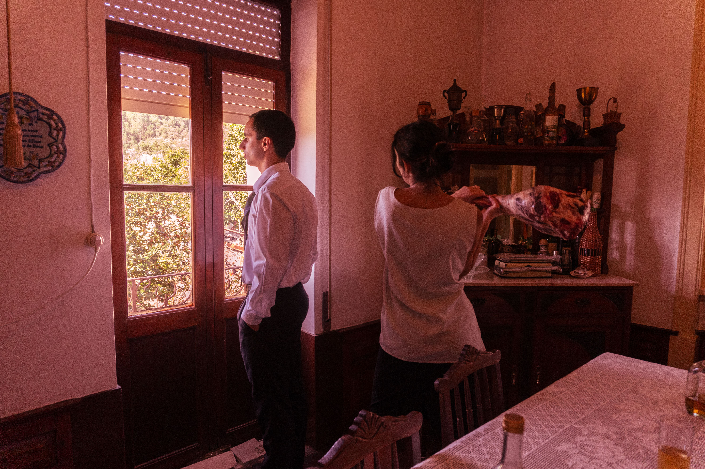

“Listen,” he said, “I’ve got something to tell you.”
“What is it, darling? What’s the matter?”
He had become absolutely motionless.

an interactive story
SCROLL OR PRESS THE BUTTON TO START
The room was warm and clean, the curtains drawn, the two table lamps
alight—
hers and the one by the empty chair opposite.
On the
sideboard behind her, two tall glasses, soda water, whisky.
Mary Maloney was waiting for her husband to come home from work.
Now and again she would glance up at the clock, but without anxiety, merely to please herself
with the
thought
that each minute gone by made it nearer the time when he would come.
Her skin—for this was her sixth month with child—
had acquired a wonderful translucent
quality, the mouth was soft,
and the eyes, with their new placid
look, seemed larger, darker than before.
When the clock said ten minutes to five, she began to listen,
and a
few moments later, punctually as always she heard the tyres on the
gravel outside,
and the car door slamming, the footsteps passing the
window, the key turning in the lock.
She laid aside her sewing,
stood up, and went forward to kiss him as he came in.
“Hullo, darling,” she said.
“Hullo,” he answered.
“Tired, darling?”
“Yes,” he said.
“I’m tired.”
And as he spoke, he did an unusual thing.
He lifted his glass and drained it in one swallow although
there was still half of it, at least half of it,
left.
He paused a moment, leaning forward in the
chair,
then he got up and went slowly over to fetch himself another.
“I’ll get it!” she cried, jumping up.
“Sit down,” he said.
She watched him as he began to sip the dark yellow drink,
and she
could see little oily swirls in the liquid because it was so strong.
“Sit down,” he said.
“Just for a minute, sit down.”
It wasn’t till then that she began to get frightened.
“Go on,” he said. “Sit down.”
She lowered herself back slowly into the chair,
watching him all the
time with those large, bewildered eyes.
“Listen,” he said, “I’ve got something to tell you.”
“What is it, darling? What’s the matter?”
He had become absolutely motionless.
“This is going to be a bit of a shock to you, I’m afraid,” he said.
“But I’ve thought about it a good deal and I’ve decided
the only
thing to do is tell you right away.
I hope you won’t blame me too much.”
“So there it is,” he added.
“And I know it’s kind of a bad time to
be telling you,
but there simply wasn’t any other way.
Of course
I’ll give you money and see you’re looked after.
But there needn’t
really be any fuss.
I hope not anyway. It wouldn’t be very good for
my job.”
Her first instinct was not to believe any of it, to reject it all.
Maybe, if she went about her business and acted as though
she hadn’t been listening, then later,
when she sort of woke up again,
she might find none of it had ever
happened.
“I’ll get the supper,” she managed to whisper, and this time he
didn’t stop her.
When she walked across the room she couldn’t feel her feet touching the floor.
Everything was automatic now — down the stairs
to the cellar,
the light switch, the deep freeze, the hand inside
the cabinet
taking hold of the first object it met.
A leg of lamb.
She carried it upstairs, holding the thin bone-end of it with both her hands,
and
as she went through the living-room,she saw him standing over by
the window with his back to her, and she stopped.
At that point, Mary Maloney simply walked up behind him
and without
any pause she swung the big frozen leg of lamb high in the air
and
brought it down as hard as she could on the back of his head.
Then he crashed to the carpet.
The violence of the crash, the noise, the small table overturning,
helped bring her out of the shock.
All right, she told herself.
So I’ve killed him.
As the wife of a detective,
she knew quite well what the penalty would be.
That was fine.
On the other hand, what about the child?
What were the laws about murderers
with unborn children?
Mary Maloney didn’t know.
And she certainly wasn’t prepared to take
a chance.
She carried the meat into the kitchen, placed it in a pan,
turned
the oven on high, and shoved it inside.
Then she washed her hands
and ran upstairs to the bedroom.
She sat down before the mirror,
tidied her face, touched up her lips and face.
She tried a smile.
“Hullo Sam,” she said brightly, aloud.
She rehearsed it several times more.
Then she ran downstairs,
took her coat, went out the back door,
down the garden, into the
street.
“Hullo Sam,” she said brightly, smiling at the man behind the
counter.
“Why, good evening, Mrs Maloney. How’re you?”
“I want some potatoes please, Sam. Yes, and I think a can of peas.”
“Patrick’s decided he’s tired and doesn’t want to eat out tonight,”
she told him.
“We usually go out Thursdays, you know,
and now he’s
caught me without any vegetables in the house.”
“Then how about meat, Mrs Maloney?”
“No, I’ve got meat, thanks. I got a nice leg of lamb, from the
freezer.”
And when it was all wrapped and she had paid,
she put on her
brightest smile and said.
“Thank you, Sam. Good night.”
“Good night, Mrs Maloney. And thank you.”
And now, she told herself as she hurried back, all she was doing
now,
she was returning home to her husband and he was waiting for
his supper.
Keep things absolutely natural and there’ll be no need for any
acting at all.
Therefore, when she entered the kitchen by the back door,
she was
humming a little tune to herself and smiling.
“Patrick!” she called. “How are you, darling?”
And when she saw him lying there on the floor with his
legs doubled up and
one arm twisted back underneath his body, it
really was rather a shock.
All the old love and longing for him
welled up inside her,
and she ran over to him, knelt down beside
him,
and began to cry her heart out.
A few minutes later she got up and went to the phone.
She knew the
number of the police station,
and when the man at the other end
answered, she cried to him.
“Quick! Come quick! Patrick’s dead!”
“Be right over,” the man said.
The car came very quickly, and when she opened the front door,
two
policemen walked in.
“Is he dead?” she cried.
“I’m afraid he is. What happened?”
While she was talking, crying and
talking, Noonan discovered a small patch
of congealed blood on the
dead man’s head.
Soon, other men began to come into the house.
There was a great deal of whispering and muttering
beside the corpse,
and the detectives kept asking her a lot of
questions.
But they always treated her kindly.
Her husband, had been killed by a blow on
the back of the head
administered with a heavy blunt instrument,
almost certainly a large piece of metal.
They were looking for the weapon.
“It’s the old story,” he said.
“Get the weapon, and you’ve got the
man.”
The search went on.
It began to get late, nearly nine she noticed
by the clock on the mantel.
The four men searching the rooms seemed
to be growing weary, a trifle exasperated.
“Look, Mrs Maloney.
You know that oven of yours is
still on, and the meat still inside.”
“Oh dear me!” she cried. “So it is!”
“Would you do me a small favour—you and these others?”
“We can try, Mrs Maloney.”
“Well,” she said. “Here you all are, and good friends of dear
Patrick’s too,
and helping to catch the man who killed him.
You must
be terribly hungry.
Why don’t you eat up that lamb that’s in the oven?
It’ll be cooked just right by now.”
“Please,” she begged. “Please eat it.
Personally I couldn’t touch a
thing.”
There was a good deal of hesitating among the four policemen,
but
they were clearly hungry, and in the end they were
persuaded to go
into the kitchen and help themselves.
She could hear them speaking among themselves,
their voices thick and sloppy
because their mouths were full of meat.
“That’s the hell of a big club the guy must’ve used to hit poor
Patrick,”.
“The doc says his skull was smashed all to pieces just like from a sledge-hammer.”
“Whoever done it, they’re not going to be carrying a thing like that
around with them longer than they need.”
“Personally, I think it’s right here on the premises.”
“Probably right under our very noses.”
And in the other room, Mary Maloney began to giggle.

Project made by:
Eduardo Ferreira
Marta Babau
Sofia Santos
Under the Supervision of:
Ana Boavida
Sérgio Rebelo
Pedro Martins
University of Coimbra
Faculty of Sciences and Technology
Department of Informatics Engineering